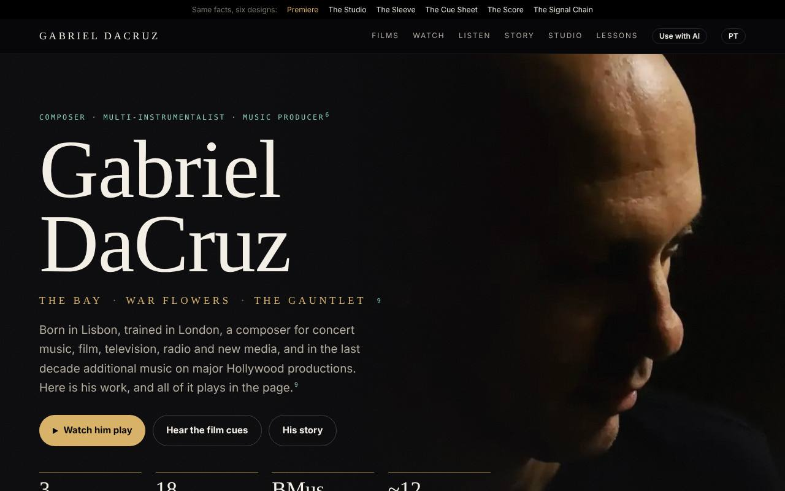
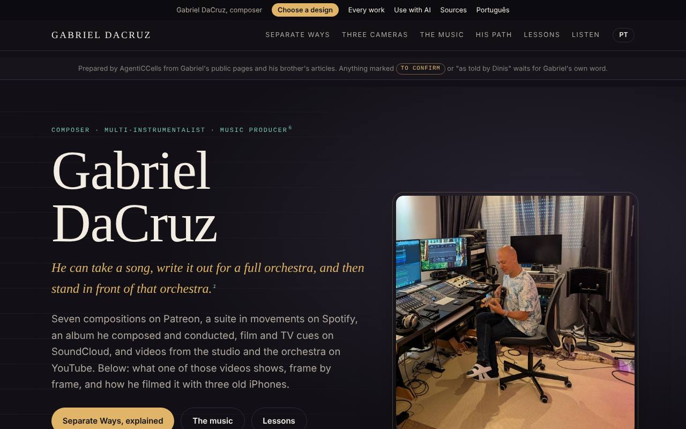
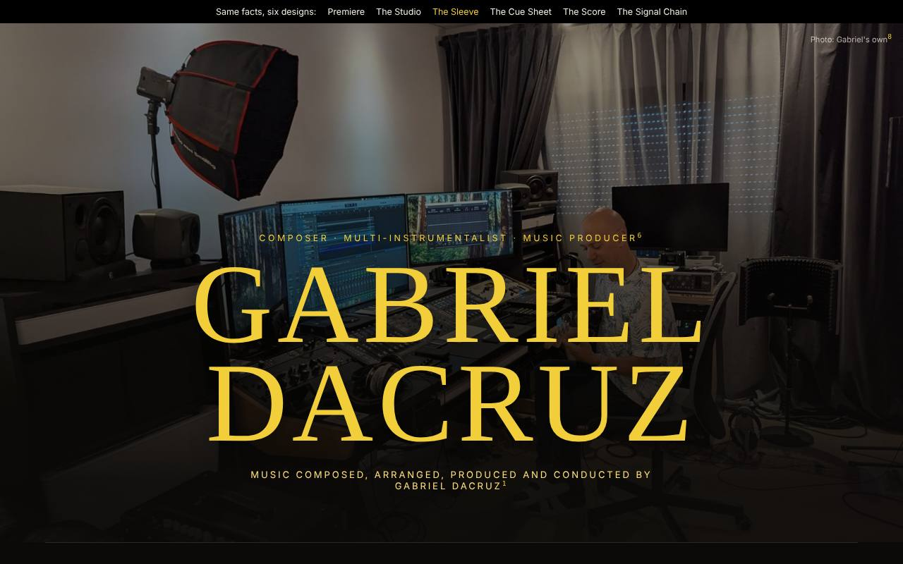
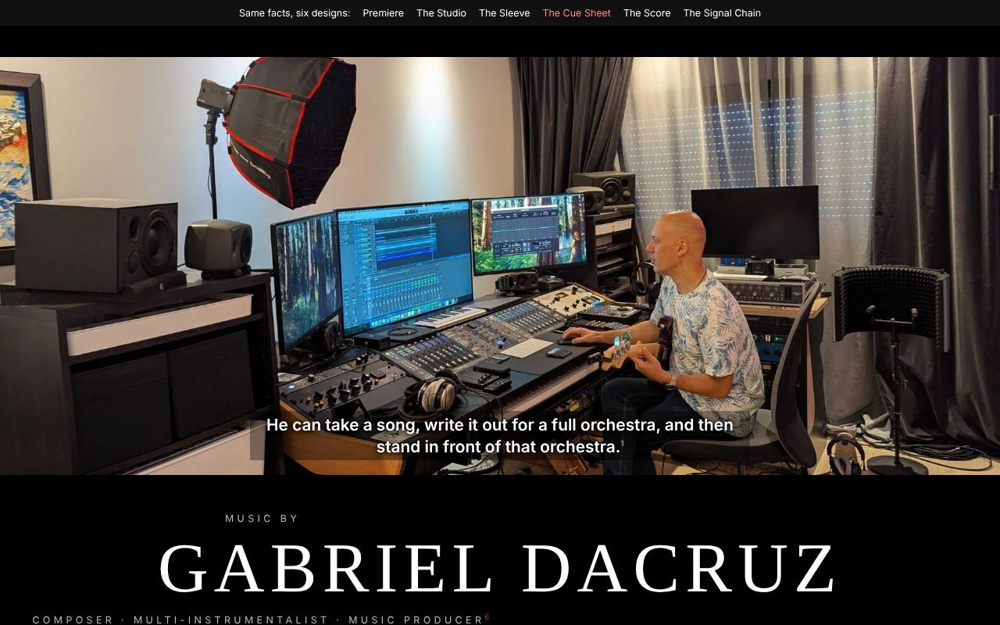
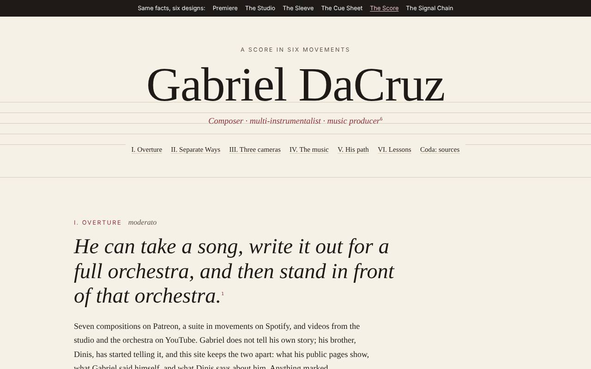
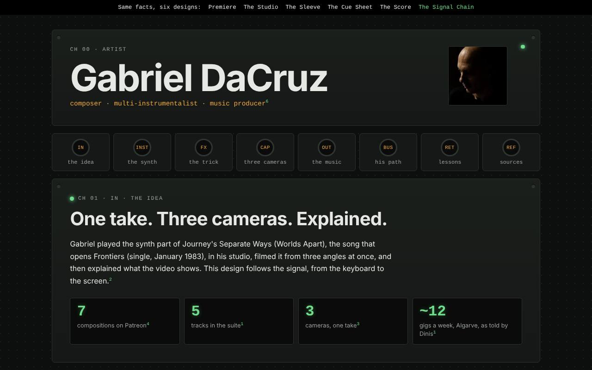

Six designs
Choose a design
The same facts, the same sources and the same drawings, laid out six ways. Pick the one that suits you; the facts never change between them. The master copy is index.md.

defaultPremiere
Cinematic: his portrait out of the dark, his films, then every video and playlist, playable in the page.

The Studio
A studio at night: his work first, each section explained with a drawing.

The Sleeve
A record sleeve and liner notes, after the look of his COR cover: Side A the music, Side B how it was made.

The Cue Sheet
A film composer's cue sheet: a letterboxed frame, reel by reel, with his own film and TV cues.

The Score
A printed score in six movements: paper, ink and oxblood, figures as plates.

The Signal Chain
A studio rack and patch bay, from input to output: LEDs and monospace labels.
Also in Portuguese: The Studio, em português. As data: designs.json.